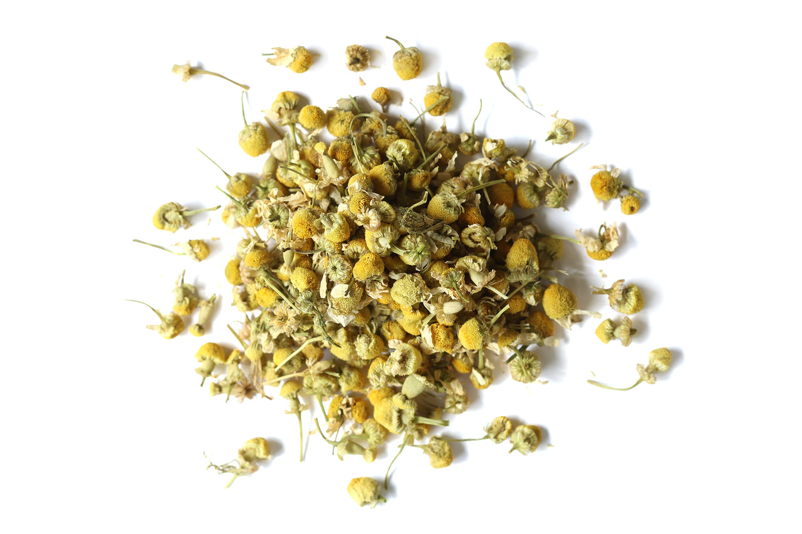
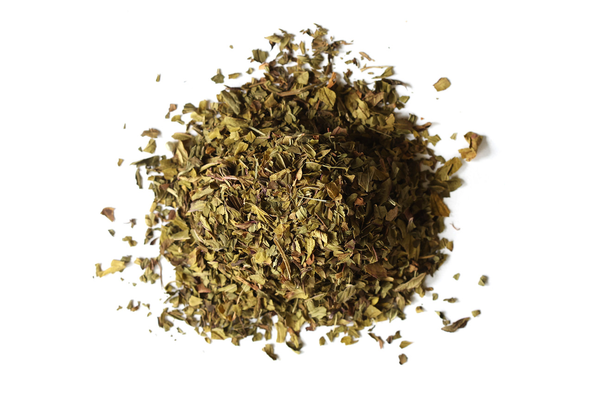
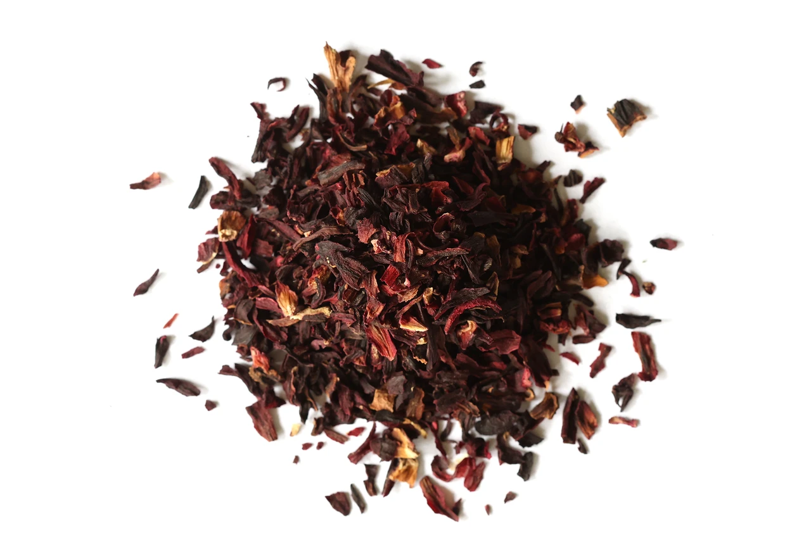

Chamomile Flowers Organic
Organic German chamomile flowers, listed as Matricaria chamomilla.
View official product ↗BOTANICAL MATERIALS
Browse three named botanicals and prepare a measured stock worksheet for non-medical project planning.

Three real references. Confirm options, prices and availability at the official store.
Organic German chamomile flowers, listed as Matricaria chamomilla.
View official product ↗
Organic peppermint leaf, listed as Mentha × piperita.
View official product ↗
Hibiscus flowers from the botanical ingredient catalog.
View official product ↗YOUR LOCAL SHORTLIST
Your selection stays in this browser. It does not reserve products or submit orders.
The catalog separates herbs, spices, teas and other ingredient categories.
A wholesale hub is linked from the official site.
The site publishes quality-control, ordering and product-care resources.